ArcQuest is a marketplace for small paid tasks. A creator publishes a task and locks the reward in a smart contract. A worker does the task and sends a proof (a link or a screenshot). The creator approves or rejects. All money is USDC on Arc. The contract, not the platform, holds the funds.
On most gig platforms the platform holds the money, workers can be ignored, and rejections come without a reason. ArcQuest moves the rules into code so that nobody, including the operator, can bend them.
| Actor | What they do |
|---|---|
| Worker | Signs in, picks a task, sends a proof, registers a claim in the contract, gets paid to a balance in the contract, withdraws to their wallet. |
| Creator | Deposits USDC, publishes a task or a contest, reviews proofs, approves or rejects with a reason, recovers unused funds after the deadline. |
| Arbiter | A wallet set in the contract. Can only decide a disputed claim: pay the worker or refund the creator, within 14 days. Can replace itself in two steps and rotate the claim signer. |
| Administrator | A platform role in the database (moderation, accounts, finance view, dispute list). Has no power over funds. |
| Platform claim signer | A server key. It signs permits that say which wallet may register a claim. It cannot move funds, approve or settle anything. |
One server process serves both the web application and the API. The browser reads the chain directly through public RPC providers and sends transactions through the user's wallet. The server keeps a database copy of what the chain says, verifies every transaction it is told about, and signs claim permits.
| Data | Source of truth | Why |
|---|---|---|
| Balances, escrow, claim state, dispute state | Contract | Only the chain can be trusted for money. |
| Task text, proofs, accounts, notifications | Database | Not worth storing onchain. |
| Submission status | Chain, mirrored in database | The server reads the claim state and updates its copy (sync and reconcile loop). |
| Wallet history | Database (activity) | Filled after verifying each transaction; avoids huge log queries on public RPCs. |
| Review deadline | Contract | The database stores the claim time; the contract enforces the clock. |
| Layer | Technology | Role |
|---|---|---|
| Frontend | React 18, TypeScript, Vite 6, Tailwind CSS 3 | Single-page application. Navigation is held in application state (no URL router); deep links use query parameters. |
| Frontend state | TanStack Query 5 | Server data, polling, cache invalidation after actions. |
| Wallets | wagmi 2, viem 2, ConnectKit 1.9, Circle Modular Wallets SDK 1.x | Extension wallets and passkey smart accounts behind one hook. |
| Backend | Bun runtime, TypeScript, Bun.serve, Bun.sql | No web framework: a small router in server/http.ts. Passwords use Bun.password (argon2). |
| Database | PostgreSQL 13 or newer (tested on 18; Neon in production) | Schema applied at startup from server/schema.sql (idempotent). |
| Smart contract | Solidity 0.8.28 (EVM Paris), OpenZeppelin 5 | ArcQuestVault: ReentrancyGuard, SafeERC20, EIP712, ECDSA. |
| Contract tooling | Foundry (forge 1.7.1) | 142 tests including fuzz and invariants. |
| Chain | Arc Testnet, chain id 5042002 | USDC is the gas token and the only currency. USDC ERC-20 view uses 6 decimals. |
| Brevo transactional API (HTTP) | Verification, password reset, notifications. A database outbox is used in development. | |
| Hosting | Docker, Render (web service), Neon (database), GitHub | One image serves site and API. Push to main redeploys. |
| Testing | bun test, forge test, Playwright | API tests, real-transaction tests on Arc Testnet, browser tests with an injected test wallet. |
Only source files are listed. Build output, dependencies, local data and secret or environment files are left out on purpose.
. |-- index.html page shell, social card tags |-- package.json scripts: dev, server, lint, typecheck, test:server, contracts:* |-- vite.config.ts dev proxy /api -> server, build to web/ |-- tailwind.config.js, postcss.config.js |-- tsconfig.json frontend types tsconfig.server.json server types |-- foundry.toml, remappings.txt contract build settings |-- Dockerfile, .dockerignore production image (copies web/ and server/) |-- render.yaml Render blueprint (service definition) |-- README.md, AGENTS.md developer notes | |-- contracts/ | |-- ArcQuestVault.sol the deployed contract | |-- test/ Base, Legacy, Job, Lifecycle, Dispute, Fuzz, Invariant (.t.sol) | |-- test-helpers/MockERC20.sol | +-- script/ CREATE2 deploy helpers | |-- server/ | |-- index.ts entry: migrate, routes, static site, reconcile loop | |-- http.ts router, sessions, cookies, validators, rate limits, notify() | |-- db.ts, schema.sql connection and full schema | |-- chain.ts RPC fallback, receipt checks, claim reads, permit signing | |-- submissions.ts sync of a submission with the chain + background reconcile | |-- email.ts providers, tokens, templates, outbox | |-- static.ts serves web/ with cache headers, blocks path traversal | |-- routes/ auth, emailAuth, tasks, contests, me, admin, adminData | +-- tests/ api, contract (API vs UI fields), e2e-chain (real transactions) | |-- src/ | |-- main.tsx, App.tsx providers, page switch, deep links | |-- api.ts fetch wrapper, formatting helpers, sign-in message | |-- ui.tsx design primitives: Card, Pill, Tabs, buttons, states | |-- config.ts, rpc.ts wagmi chain and RPC fallback list | |-- context/AuthContext.tsx | |-- passkey/ Circle SDK adapter and context | |-- hooks/ useWallet, useVault (all contract calls), useVaultHistory | |-- contracts/vault.ts ABI fragments and addresses | |-- lib/ deeplink, share links, time helpers | +-- components/ 36 screens and widgets (see section 10) | +-- scripts/ check.sh, deploy helpers
| Item | Value |
|---|---|
| Name | ArcQuestVault (file contracts/ArcQuestVault.sol) |
| Address | 0xf0848d4325a1cbf85f4c1539194a61036df09b64 on Arc Testnet, verified on the Arc explorer |
| Compiler | solc 0.8.28, optimizer 200 runs, EVM Paris |
| Constructor | (IERC20 usdc, address arbiter, address claimSigner), all non-zero |
| Upgradeability | None. No proxy, no owner, no pause, no fee. |
| Dependencies | OpenZeppelin: IERC20, SafeERC20, ReentrancyGuard, EIP712, ECDSA |
| Name | Value | Meaning |
|---|---|---|
| MIN_REVIEW_PERIOD / MAX_REVIEW_PERIOD | 1 day / 14 days | Allowed review time chosen by the creator. |
| DEFAULT_REVIEW_PERIOD | 3 days | Used when the creator passes 0. |
| DISPUTE_WINDOW | 7 days | Time a rejected worker has to dispute. |
| ARBITER_TIMEOUT | 14 days | After this, a dispute can be split 50/50 by anyone. |
| MAX_JOB_DURATION | 365 days | Longest deadline from creation. |
| MAX_SLOTS | 10,000 | Largest number of places per job. |
36 public functions: 18 write, 18 read.
| Function | Caller | Effect |
|---|---|---|
| deposit(amount) | anyone | Pulls USDC, credits the amount actually received. |
| withdraw(amount) | owner of balance | Sends USDC to the caller only. |
| createJob(jobId, reward, slots, deadline, reviewPeriod) | creator | Debits reward x slots from the creator balance into the job escrow. |
| submitClaim(jobId, expiry, signature) | worker | Checks the EIP-712 permit, reserves one reward, starts the review clock. |
| approveClaim(jobId, worker) | creator | Pays the worker balance now. |
| rejectClaim(jobId, worker) | creator | Allowed before the review period ends; starts the dispute window. |
| finalizeClaim(jobId, worker) | anyone | After the review period, pays the worker (automatic approval). |
| disputeClaim(jobId) | worker | Within 7 days of a rejection. |
| releaseRejected(jobId, worker) | anyone | After 7 days without dispute, returns the reward to the job escrow and frees the slot. |
| resolveDispute(jobId, worker, payWorker) | arbiter | Only before 14 days; pays the worker or refunds the creator. |
| expireDispute(jobId, worker) | anyone | From 14 days, splits the reward 50/50 (odd units go to the creator). |
| reclaimJob(jobId) | creator | After the deadline, moves free escrow back to the creator balance. Never touches locked funds. |
| fundTask / releaseReward / refundTask | creator | Contest pool: reserve, pay a winner, recover after the unlock time. |
| proposeArbiter / acceptArbiter | arbiter / pending | Two-step arbiter replacement. |
| setClaimSigner(next) | arbiter | Immediate rotation of the signer key. |
| Views | anyone | balanceOf, jobs, claims, tasks, arbiter, pendingArbiter, claimSigner, usdc, the seven constants, claimPermitDigest, CLAIM_PERMIT_TYPEHASH, eip712Domain. |
Deposited, Withdrawn, JobCreated, ClaimSubmitted, ClaimPaid, ClaimRejected, ClaimDisputed, ClaimRefunded, DisputeResolved, DisputeExpired, JobReclaimed, TaskFunded, RewardReleased, TaskRefunded, ArbiterProposed, ArbiterChanged, ClaimSignerChanged, EIP712DomainChanged
Typed data ClaimPermit(bytes32 jobId, address worker, uint64 expiry) with domain name ArcQuestVault, version 1, chain id and the contract address. The server signs it with the claim signer key after validating the proof off-chain. The worker's wallet then calls submitClaim. Permits last 30 minutes. A claim is unique per worker and job, so a permit cannot be replayed.
Earlier test deployments (a first vault and a renamed vault without the claim protocol) are retired and not used by the application. The current address above is the only one the product reads.
In every flow the same rule applies: the browser performs the action (a signature or a transaction) and then tells the server; the server never accepts the browser's word for money, it reads the chain or the receipt.
| Flow | Steps |
|---|---|
| Email sign-up and sign-in | POST /auth/register or /auth/login. Password hashed with argon2. Session token random, stored as SHA-256 hash, sent as an HttpOnly SameSite=Lax cookie (Secure in production). Login limited to 10 tries per 15 minutes per email. |
| Wallet sign-in | GET /auth/nonce, wallet signs the message (address + nonce), POST /auth/wallet. Server checks the nonce (single use, expiry), then the signature: plain ECDSA first, then ERC-1271 / ERC-6492 for smart accounts through the chain client. Account is created on first sign-in. Signatures up to 16,000 characters are accepted (passkey signatures are about 3,500). |
| Passkey wallet | Circle Modular Wallets: the browser registers or uses a WebAuthn credential, derives a smart account, signs the same message, and the server verifies it as above. The username shown on the passkey is sanitised (5 to 50 characters, no spaces). The option only appears on the hostname declared in the Circle Console. |
| Link a wallet | POST /me/wallet with the same proof. One wallet belongs to one account. |
| Deposit | Approve the exact amount, then deposit (one batched operation for passkey wallets). The browser then POSTs the hash to /me/activity; the server verifies the receipt and records one row per event for the history. |
| Withdraw | withdraw(amount) sends USDC to the caller only. History updated the same way. |
| Contest | Creator: fundTask for the prize pool, then POST /contests (server verifies TaskFunded for the total). Participants enter with a proof. Creator pays winners with releaseReward and POSTs /entries/:id/award (server verifies RewardReleased: worker, amount, contest). |
| Forgot password | POST /auth/forgot always answers success. A 1-hour single-use token is emailed; POST /auth/reset sets the new password, invalidates all sessions and marks the email verified. |
| Email confirmation | A 24-hour single-use token is emailed at sign-up. Until confirmed, an email account cannot publish, claim or enter contests (only when an email provider is configured). Wallet accounts are exempt. Accounts older than 9 Nov 2026 are treated as confirmed. |
| Notifications | Stored in the database and shown by a bell (polled). Important kinds are also emailed when the address is confirmed and the user left notifications on. |
| Reconcile loop | Every 90 seconds the server syncs up to 40 submissions that are not final (draft, pending, rejected, disputed) so the database follows the chain even if nobody opens the page. |
| Deep links | ?ref=CODE referral, ?task=ID open a shared task after sign-in, ?page=help public FAQ without an account, ?reset=TOKEN and ?verify=TOKEN email links. |
PostgreSQL. Money columns are numeric(20,6) (USDC with 6 decimals). Identifiers are UUIDs. The schema is applied at every start and is idempotent; legacy rows from the first contract version are closed by the migration.
| Table | Columns and rules |
|---|---|
| users | id, email (unique, nullable), password_hash, username (unique), display_name, wallet_address (unique, nullable), referral_code (unique), referred_by, role (user, admin), status (active, suspended), created_at, email_verified_at, email_notifications. Check: an email or a wallet must exist. |
| sessions | token_hash (primary key, SHA-256), user_id, expires_at, created_at. |
| nonces | nonce (primary key), expires_at: single-use wallet sign-in challenges. |
| uploads | id, user_id, mime, size, data (bytea), created_at. PNG, JPEG, WebP up to 3 MB, detected by file signature. |
| tasks | id (client-generated UUID, its keccak hash is the contract job id), creator_id, title, description, instructions, type, platform, url, reward numeric(20,6), slots, deadline, status (open, closed, removed), fund_tx (unique), created_at, protocol (1 = first contract, 2 = current), review_days. |
| submissions | id, task_id, worker_id, proof_url, proof_file, note, status (draft, pending, approved, rejected, disputed, refunded, split), reject_reason, pay_tx (unique), created_at, reviewed_at, permit_expires, claim_at, status_at. Unique (task_id, worker_id). |
| contests | id, creator_id, title, description, prompt, type, ends_at, slots, prizes (jsonb list of rank and amount), prize_pool, status, fund_tx (unique), created_at, protocol. |
| contest_entries | id, contest_id, user_id, proof_url, proof_file, note, status, prize_place, prize_amount, pay_tx (unique), created_at. Unique (contest_id, user_id). |
| activity | id, user_id, tx_hash, log_index, kind (deposit, withdraw, fund, reward, refund), amount, at. Unique (tx_hash, log_index): a transaction is never recorded twice. |
| notifications | id, user_id, kind, title, body, link, read, created_at. Index on (user_id, read, created_at). |
| reports | id, reporter_id, target_type (task, contest, user), target_id, reason, status, resolved_by, resolved_at. |
| audit_log | id, actor_id, action, target, detail (jsonb), created_at: every admin action. |
| email_tokens | token_hash (primary key), user_id, kind (verify, reset), email, expires_at, used_at, created_at. |
| email_outbox | id, to_email, subject, body, created_at. Filled only when no provider is configured and not in production, so tests can read links. |
| Contract claim | Database submission |
|---|---|
| none (permit issued, transaction not yet sent) | draft |
| Pending / Paid / Rejected / Disputed / Refunded / Split | pending / approved / rejected / disputed / refunded / split |
Open slots count: pending, approved, rejected, disputed, split, plus unexpired drafts. A refunded claim frees its slot, as in the contract.
JSON over HTTPS. In the browser every path is prefixed with /api; the production server accepts both forms and serves the web application on every other path. Access: public (no session), user (valid session), admin (session and admin role checked in the database on every request). Errors are {"error": "message"} with a status code (400 validation, 401 sign-in required, 403 forbidden or suspended, 404, 409 conflict, 429 rate limit).
| Verb | Path | Access | Purpose |
|---|---|---|---|
| POST | /auth/register | public | Create an email account (optional referral code), start a session, send the confirmation email. |
| POST | /auth/login | public | Email and password sign-in. |
| GET | /auth/nonce | public | One-time challenge for wallet sign-in. |
| POST | /auth/wallet | public | Sign in or create an account from a signed message (extension or passkey wallet). |
| POST | /auth/logout | public | End the session. |
| POST | /auth/forgot, /auth/reset | public | Password reset request and completion. |
| POST | /auth/verify | public | Confirm an email address with a token. |
| POST | /auth/resend-verification | user | New confirmation email (3 per hour). |
| GET | /me | public | Current user or null; also grants the admin role to listed emails or wallets. |
| POST | /me/wallet, /me/password, /me/settings | user | Link a wallet, change password, email-notification switch. |
| Verb | Path | Access | Purpose |
|---|---|---|---|
| GET | /tasks | user | Open tasks: search, type filter, pagination, slots taken, caller's status. |
| GET | /tasks/:id | user | One task with instructions. |
| POST | /tasks | user | Register a task after verifying the createJob transaction onchain. Needs a linked wallet and a confirmed email. |
| POST | /tasks/:id/close | user | Creator stops new claims (database only). |
| POST | /tasks/:id/claim-permit | user | Validate a proof, create or refresh a draft submission, return a signed permit. |
| GET | /tasks/:id/submissions | user | Creator's review list (not drafts). |
| POST | /submissions/:id/sync | user | Read the claim state from the chain and update the database; notify. |
| POST | /submissions/:id/reject-reason | user | Creator stores the reason once the claim is rejected onchain. |
| GET | /me/tasks, /me/submissions | user | Creator's tasks with counters; worker's submissions with deadlines. |
| POST / GET | /uploads, /uploads/:id | user | Image upload (3 MB); download allowed to the owner, the task or contest creator and admins. |
| Verb | Path | Access | Purpose |
|---|---|---|---|
| GET / POST | /contests | user | List open contests; register a contest after verifying the pool funding. |
| POST | /contests/:id/close, /contests/:id/entries | user | Close a contest; enter a contest. |
| GET | /contests/:id/entries | user | Creator's list of entries. |
| POST | /entries/:id/award, /entries/:id/reject | user | Record a verified prize payment; dismiss an entry. |
| GET | /me/contests, /me/entries | user | Own contests and entries. |
| Verb | Path | Access | Purpose |
|---|---|---|---|
| GET | /me/stats, /me/earnings, /me/referrals | user | Dashboard counters, confirmed payments, referral list. |
| GET / POST | /me/activity | user | Wallet history; record a transaction after receipt verification. |
| GET / POST | /notifications, /notifications/read | user | Bell content and mark as read. |
| POST | /reports | user | Report a task, contest or user (10 per hour). |
| Verb | Path | Access | Purpose |
|---|---|---|---|
| GET | /admin/overview, /admin/finance | admin | Counters; contract USDC read from the chain, funded and paid totals, 7-day activity. |
| GET | /admin/disputes | admin | Disputed submissions with proofs, parties and reasons. |
| GET / POST | /admin/reports, /admin/reports/:id/resolve | admin | Moderation queue: dismiss, remove content, suspend author. |
| GET / POST | /admin/items, /admin/items/:kind/:id/status, /admin/items/:kind/:id/entries | admin | All tasks and contests; remove, close or restore; view entries. |
| GET | /admin/payments, /admin/audit | admin | Confirmed payments; trace of admin actions. |
| GET / POST | /admin/users, /admin/users/:id/status | admin | Accounts with counters; suspend or reactivate (suspension ends sessions). |
| GET / POST | /admin/email-status, /admin/email-test | admin | Email configuration, test message, recent provider errors. |
Login 10 per 15 min per email; registration 5 per hour per email and 60 per hour overall; forgot password 3 per hour per email; password change 10 per 15 min; task creation 20 per hour; claim permits 60 per hour; contest creation 10 per hour; entries 60 per hour; uploads 30 per hour; wallet sign-in 20 per 15 min per address; sync 600 per hour. Counters reset when the server restarts.
| Module | Responsibility |
|---|---|
| index.ts | Applies the schema, registers routes, serves the site from web/, starts the reconcile loop. Port from PORT or API_PORT. Idle timeout 60 s because chain checks can take several seconds. |
| http.ts | Small router with path parameters; typed context (request, URL, params, user, cookies); validators (string length, amounts with at most 6 decimals, http links, UUIDs, transaction hashes); session lookup; admin check; rate limiter; notify() that writes the bell message and sends an email when allowed. Rejects non-JSON bodies on write routes. |
| chain.ts | Public RPC client with ordered fallback (optional keyed endpoint first). Receipt lookup that retries for about 30 seconds. Verifiers for JobCreated, TaskFunded, RewardReleased; claim and job reads; EIP-712 permit signing; wallet signature verification (EOA then smart-account); activity extraction from a receipt; vault USDC balance. |
| submissions.ts | Maps chain claim states to database statuses, records transition times, creates the right notifications, and runs the background reconcile loop. |
| email.ts | Brevo sender, templates, hashed single-use tokens, notification emails, outbox for development, recent-error buffer for the admin tool. A configuration without a provider disables confirmation requirements. |
| static.ts | Serves files from web/, long cache for hashed assets, no cache for the page shell, blocks path traversal. |
| routes/* | One file per area: auth, email auth, tasks, contests, account data, admin, admin data. |
Order in main.tsx: Query client, wagmi, ConnectKit, Passkey context, then App which adds the Auth context. Navigation is a page id held in state; a left sidebar on desktop and a drawer on mobile list the pages. Public screens (sign-in, public FAQ, legal pages, email links) are shown before the application shell.
| Page | Contents |
|---|---|
| Dashboard | Greeting, "Get started" checklist, balances, counters, quick actions. |
| Tasks | Tabs: Offers (search, filters, pagination, copy link, submit proof), My submissions (collect payment, dispute, split), My tasks (review, approve, reject with reason, release, reclaim, close). Publish form with review-time choice. |
| Contests | Running contests, my entries, my contests (award prizes, recover pool), create form. |
| Wallet | Balance cards, Deposit, Withdraw, History; mismatch and read-error banners. |
| Earnings, Referrals | Confirmed payments; referral code, link and list. |
| How it works, Support | Guides, FAQ, network details, faucet link; contact links. |
| Settings | Profile, email status and notifications, linked wallet (extension or passkey), password. |
| Administration | Finances, Disputes, Reports, Content, Payments, Accounts, Email, Log. |
The hook useWallet returns the active address, whether it is connected, the kind (extension or passkey), and functions to sign a message, send calls and disconnect. Rule: a logged-in account linked to a wallet only ever uses that exact wallet; if another one is connected, a banner explains the mismatch and offers to disconnect it.
The browser tries these public endpoints in order and falls back on failure: Blockdaemon, dRPC, QuickNode, then the primary endpoint. The primary endpoint refuses some countries (Cloudflare error 1009), so it is last. The server uses the same list after an optional keyed endpoint. The wallet-extension network settings should use one of the alternative endpoints. When the primary is blocked and the others also fail, the app shows a clear retry message instead of a false zero balance.
| Endpoint | Address |
|---|---|
| Blockdaemon | https://rpc.blockdaemon.testnet.arc.io |
| dRPC | https://rpc.drpc.testnet.arc.io |
| QuickNode | https://rpc.quicknode.testnet.arc.io |
| Primary | https://rpc.testnet.arc.io |
Chain id 5042002, native and fee token USDC. Faucet for test USDC: faucet.circle.com (Arc Testnet).
The look is calm and trustworthy: a soft light background, frosted "glass" cards, a deep navy accent, and plain English. It is mobile first; the same screens work from phone to desktop.
| Role | Value | Use |
|---|---|---|
| Ink | #0f1c35 | Text, headings, dark panels. |
| Accent | #1a2f6e | Primary buttons, active navigation, links, key numbers. |
| Accent hover | #1061a6 | Hover and focus emphasis. |
| Focus ring | #85b1ed | Keyboard focus. |
| Muted | #6b6580 | Secondary text. |
| Subtle | #8a849c | Hints, disabled controls. |
| Success | #1a8047 | Amounts earned, confirmed, approved. |
| Danger | #ba2b4c | Errors, rejections, sign-out. |
| Page background | #f4f6ff to #fffcf7 to #f8f4ff | Vertical soft gradient behind all pages. |
| Element | Specification |
|---|---|
| Glass card | Background white at 72 percent, blur 24 px with saturation 180 percent, 1 px white border at 68 percent, shadow 0 8px 32px rgba(15,28,53,.07) plus an inner top highlight. Radius 16 px. |
| Inputs | Radius 12 px, white at 60 percent, 1 px border ink at 12 percent, 13 px text. |
| Primary button | Accent fill, white text, soft accent shadow; disabled state is grey with no shadow. Full width on forms. |
| Ghost button | Accent at 7 percent fill, 1 px accent border at 12 percent, accent text. |
| Pills and chips | Fully rounded. Status colours: pending amber, approved green, rejected red, disputed purple, refunded and split grey. |
| Tabs | Segmented control on a tinted track; the active tab is a raised white chip. |
| Hero balance card | Deep navy panel with a thin multi-colour line on top, two balances side by side (wallet and ArcQuest), address chip and disconnect button. |
The mark is a white lightning bolt in a navy rounded square next to the word "ArcQuest". Social images (banner, protection flow, card) are produced from HTML and live outside the repository.
Captures come from a test environment with demonstration data (sample tasks and a sample contest). Names shown are test accounts.
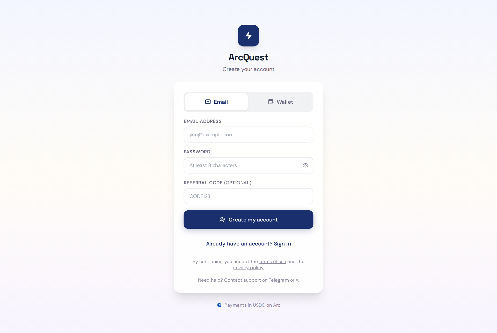

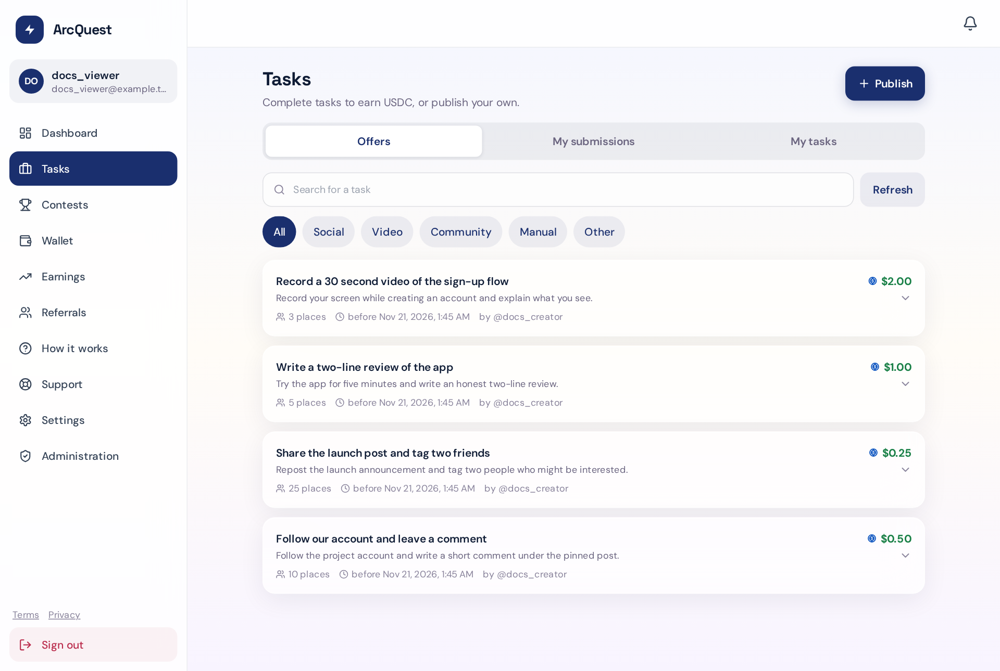
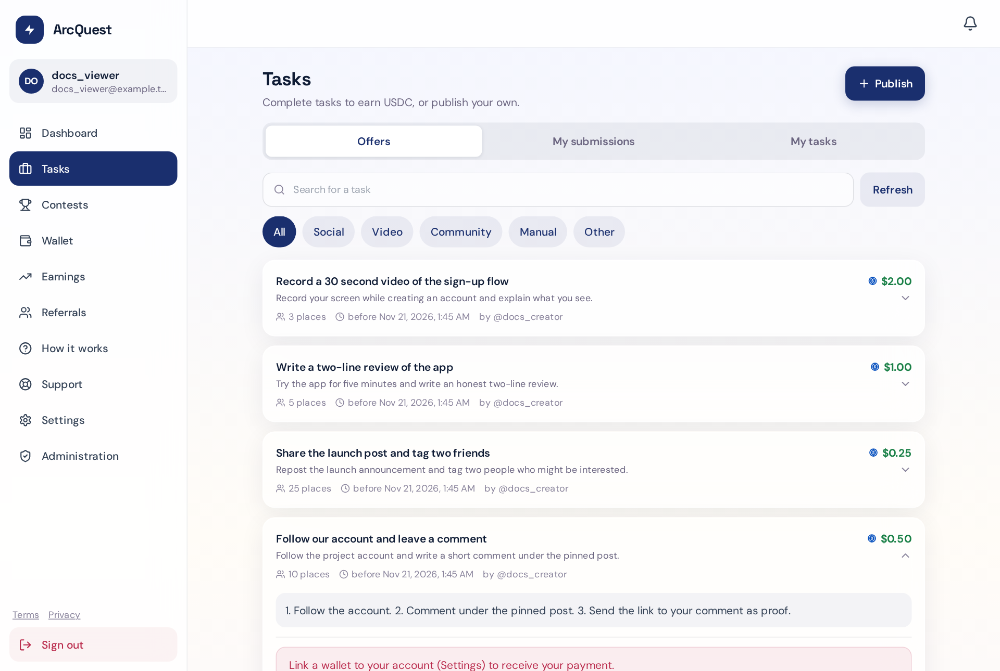


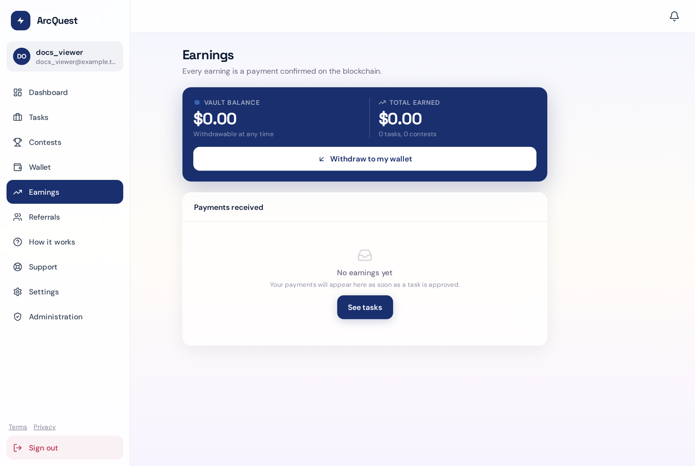

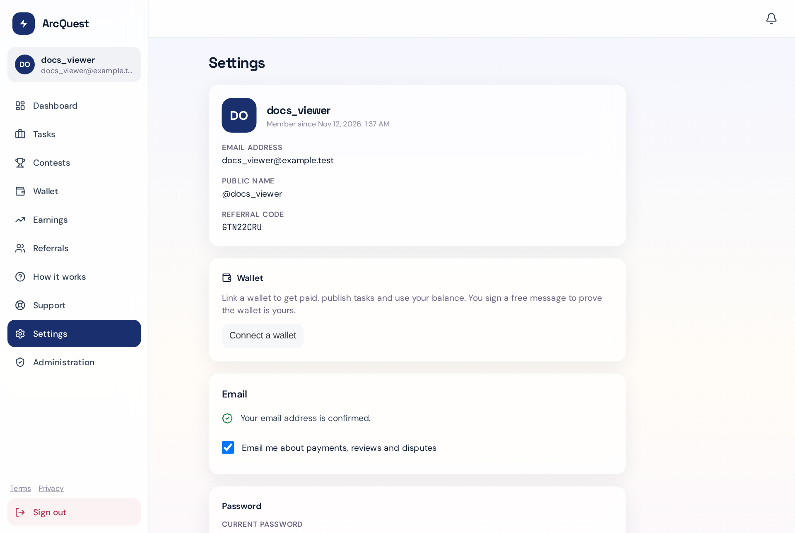
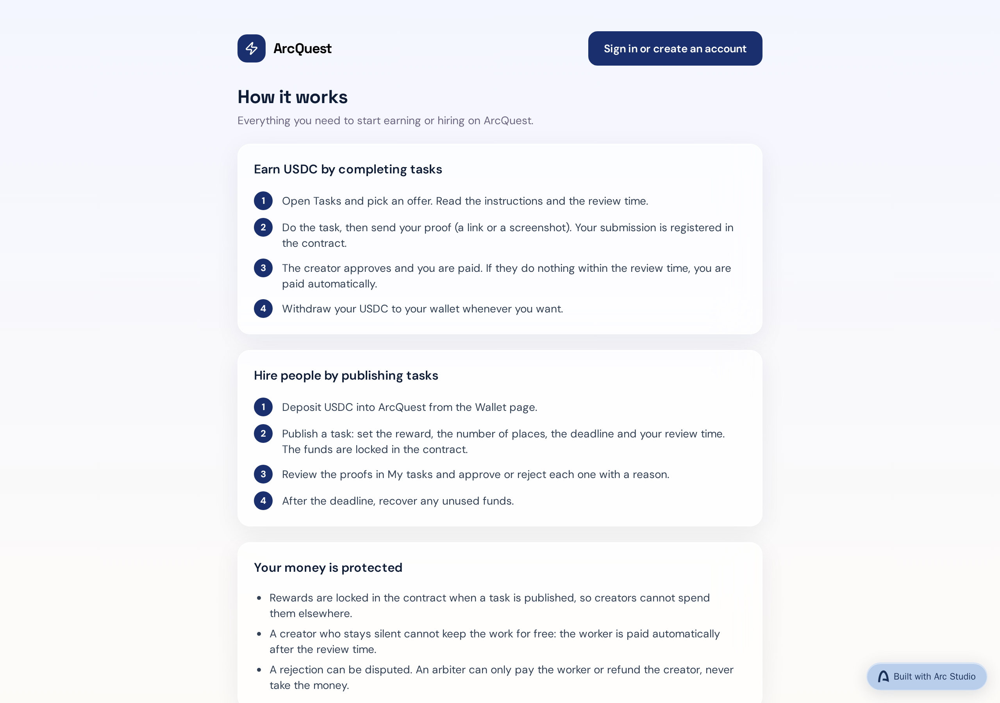

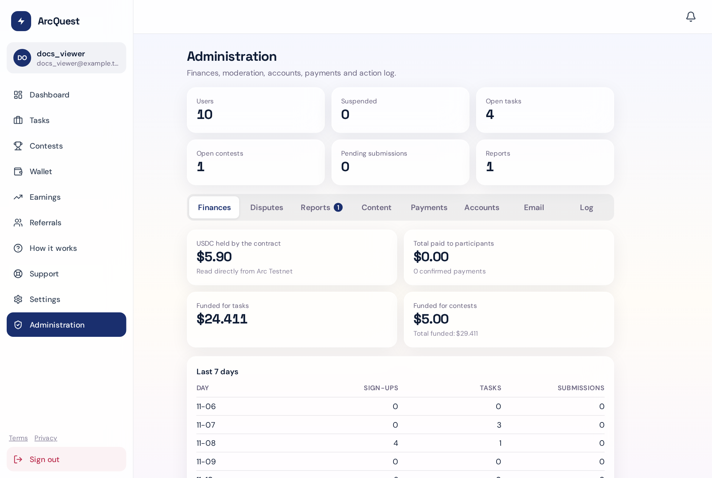
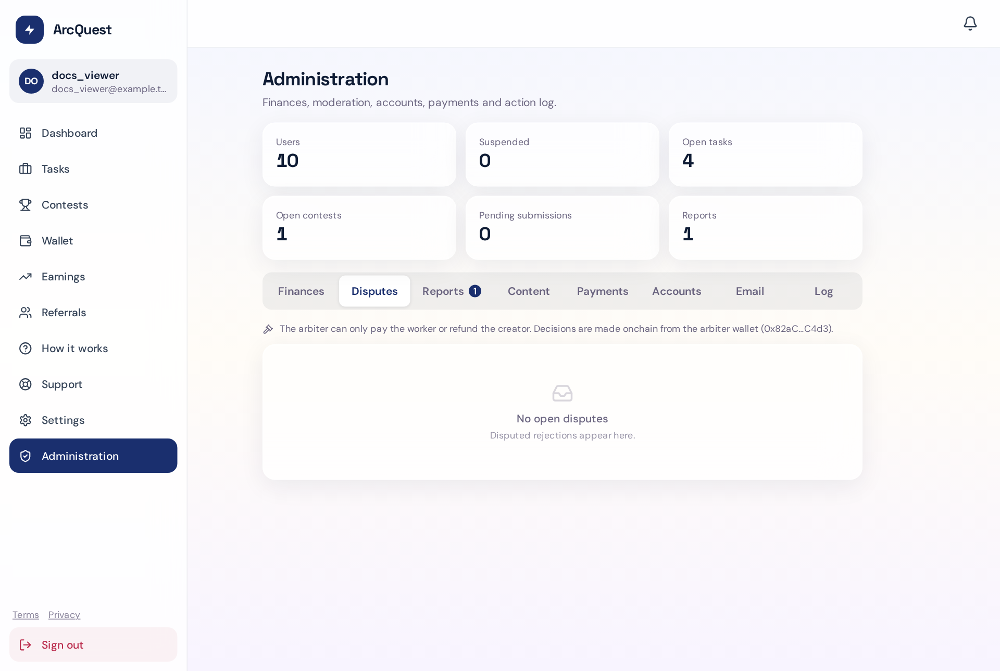
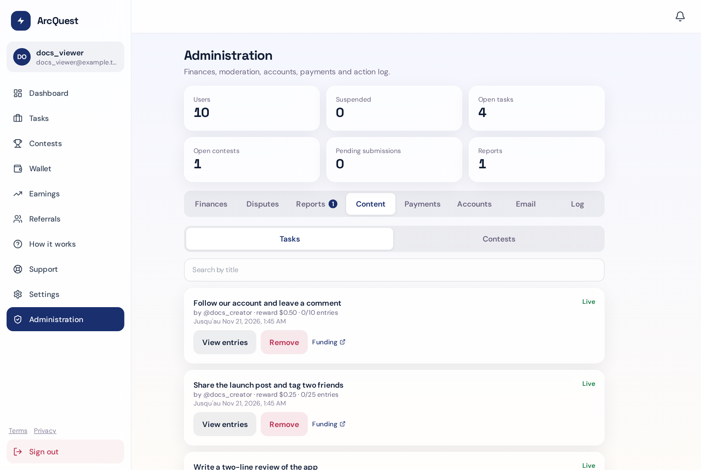
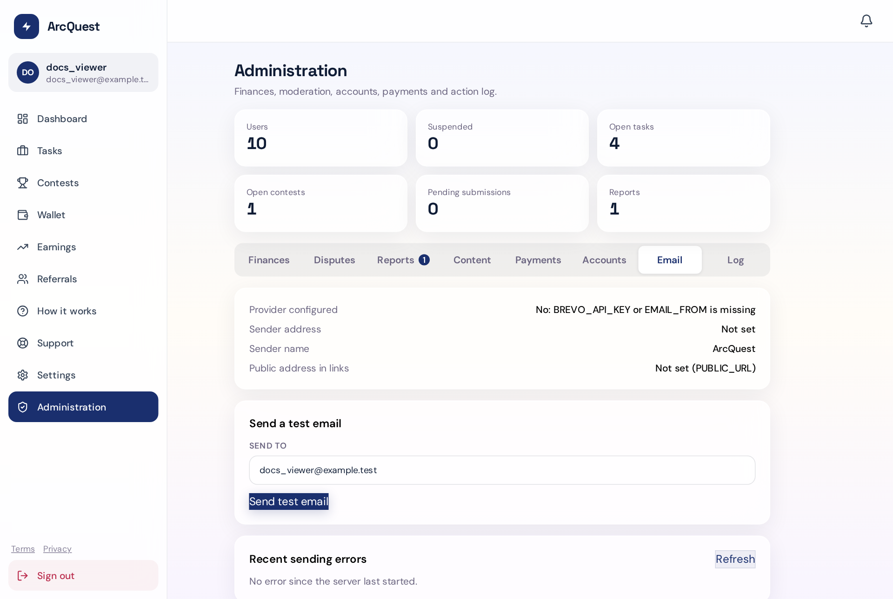

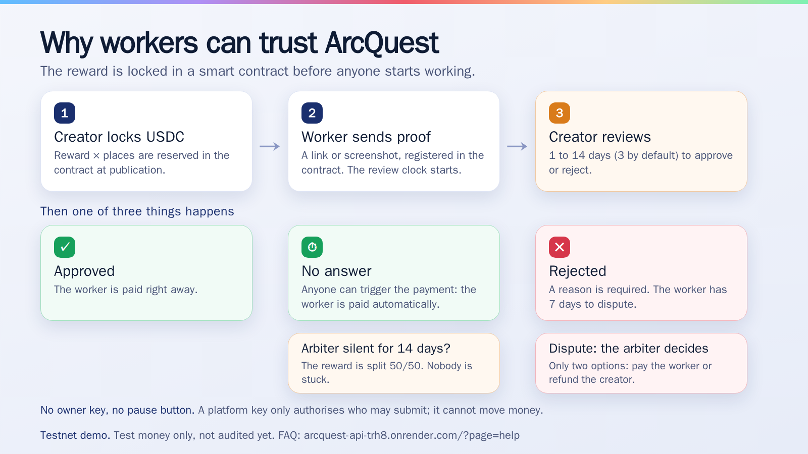
| Risk | Mitigation |
|---|---|
| Theft of user funds | No owner, no upgrade, no pause. Withdraw pays only the caller. Approve, reject, release and reclaim are restricted to the funder. The arbiter can only choose between paying the worker and refunding the creator. Exact-amount approvals. |
| Fake claims and slot flooding | A claim needs an EIP-712 permit from the server key, issued only after account, proof, deadline and slot checks. One claim per worker and job. Rotating the signer is immediate. |
| Forged payment or funding notices | The server verifies the transaction receipt and event arguments (job id, funder, amounts) and rejects reused hashes. Submission status is read from the contract, not from the browser. |
| Replay of signatures | Wallet sign-in nonces are single use and expire. Permits expire in 30 minutes and cannot be reused. |
| Account takeover | Argon2 password hashes; session tokens stored hashed; HttpOnly SameSite=Lax cookie, Secure in production; rate limits; generic errors on login and reset; a reset ends all sessions; reset and confirmation tokens are hashed, single use and expire. |
| Abusive uploads | Only PNG, JPEG, WebP (checked by file signature), 3 MB, served with no-sniff headers; only the owner, the relevant creator and admins can read. |
| Injection and cross-site attacks | Parameterised SQL everywhere; React output escaping; JSON-only write routes; same-origin cookies. |
| Admin misuse | Role checked in the database on every request; every admin action written to an audit log; admins have no access to funds. |
| Secrets | Keys and passwords live only in environment variables on the server. The only credentials in the browser bundle are the public client key and public addresses. |
| Provider outage or regional blocking | Ordered RPC fallback in browser and server; clear retry messages; background reconcile of submissions. |
| Layer | What is covered |
|---|---|
| Contract (Foundry) | 142 tests: every function, revert paths, timing boundaries to the second, permits (valid, expired, wrong signer, replay), slot limits, odd-amount 50/50 split, arbiter handover, fuzz tests, three invariants (solvency, exact conservation, locked and active counters). Static analysis and two automated security reviews. |
| Server (bun test) | 22 tests: accounts and sessions, wallet sign-in and nonce replay, anti-cheat rules (one claim per account, concurrent slot requests), permits, uploads, admin access, reports, email flows (confirmation, reset, expiry, enforcement on a second server instance), the API-to-UI field compatibility check. |
| Real transactions | Two scenarios on Arc Testnet with test wallets: protected task from creation to approval, rejection, dispute and the refusal of stolen or replayed permits; and a contest from funding to a paid prize. |
| Browser (Playwright) | Sign-up, all pages, mobile layout, wallet sign-in with an injected test wallet, deposit, publish, submit, approve, reject, dispute, admin dispute list, withdraw, blocked-RPC simulation, passkey creation with a virtual authenticator against the live site. |
| Static checks | oxlint (type-aware) and TypeScript for the frontend and the server. |
| Name | Purpose |
|---|---|
| DATABASE_URL | Postgres connection (secret). |
| PORT / API_PORT | Listening port. |
| PUBLIC_URL | Public site address used in email links (required in production). |
| COOKIE_SECURE | Secure cookie flag, true over HTTPS. |
| ADMIN_EMAILS / ADMIN_WALLETS | Accounts that receive the admin role. |
| VITE_VAULT_ADDRESS, VITE_VAULT_DEPLOY_BLOCK | Contract address and block, also embedded in the frontend build. |
| CLAIM_SIGNER_PRIVATE_KEY | Server key for claim permits (secret). Its address must equal the contract's claim signer. |
| RPC_URL_Arc_Testnet | Optional keyed RPC for the server only. |
| VITE_CLIENT_KEY, VITE_CLIENT_URL, VITE_PASSKEY_DOMAIN | Circle Modular Wallets client key (public, domain-restricted), service address, and the hostname where passkeys are enabled. |
| BREVO_API_KEY, EMAIL_FROM, EMAIL_FROM_NAME | Email sending (secret key; the sender must be verified at the provider). |
| REQUIRE_EMAIL_VERIFICATION | Force confirmation without a provider (tests). |
| Item | State |
|---|---|
| External security audit | Not done. Required before any mainnet use. |
| Network fees for actions | Extension wallets pay small fees to submit a claim, approve, reject, collect and withdraw. Passkey wallets are built to use sponsored fees; end-to-end confirmation of sponsored deposits should be re-checked after the fee-floor fix is live. A relayer for all wallets is a design option. |
| Founder revenue | No platform fee yet. Planned design: a capped fee fixed when a task is created, charged to the creator on top of the reward and taken only on rewards actually paid; this needs a contract change and a new deployment. |
| Local money (mobile money) | Removed from scope. Needs a payment partner and compliance work. |
| Rate limiting | In memory; resets on restart and is per instance. |
| Hosting tier | Free instances sleep; the first request is slow. |
| Regional access | Some countries are blocked by the primary RPC; fallbacks and a retry message are in place. |
| Referrals | Counter only, no payout. |
| Wallet history | Only operations recorded after the history feature was added. |
| Email deliverability | Improves with a sender on your own domain. |
| Term | Meaning |
|---|---|
| Arc | A Circle-backed EVM network where USDC is the gas token. |
| USDC | The dollar stablecoin used for every amount in the product. |
| Escrow | Money locked in the contract until rules release it. |
| Claim | A worker's registered submission for a job in the contract. |
| Permit | A signed message from the platform key saying which wallet may register a claim. |
| Review period | Time the creator has to approve or reject before the worker can be paid automatically. |
| Dispute | A worker's challenge of a rejection, decided by the arbiter. |
| Arbiter | The wallet allowed to settle disputes between two outcomes only. |
| Passkey | A device-based credential (fingerprint, face or device code) used instead of a password or seed phrase. |
| Smart account | A contract wallet controlled by a passkey; sends user operations through a bundler. |
| Paymaster | A service that pays network fees on behalf of the user. |
| RPC | The server a client uses to read the blockchain or send transactions. |
| Reconcile | The background job that copies chain state into the database. |
End of document. No secret, key, password, connection string or environment value is included.